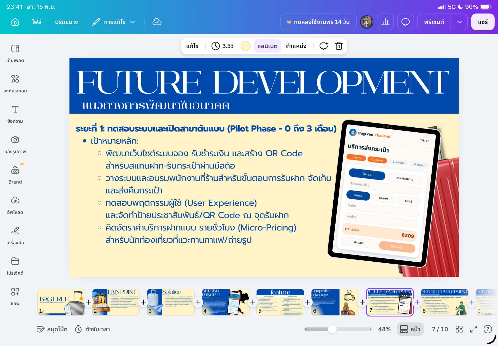
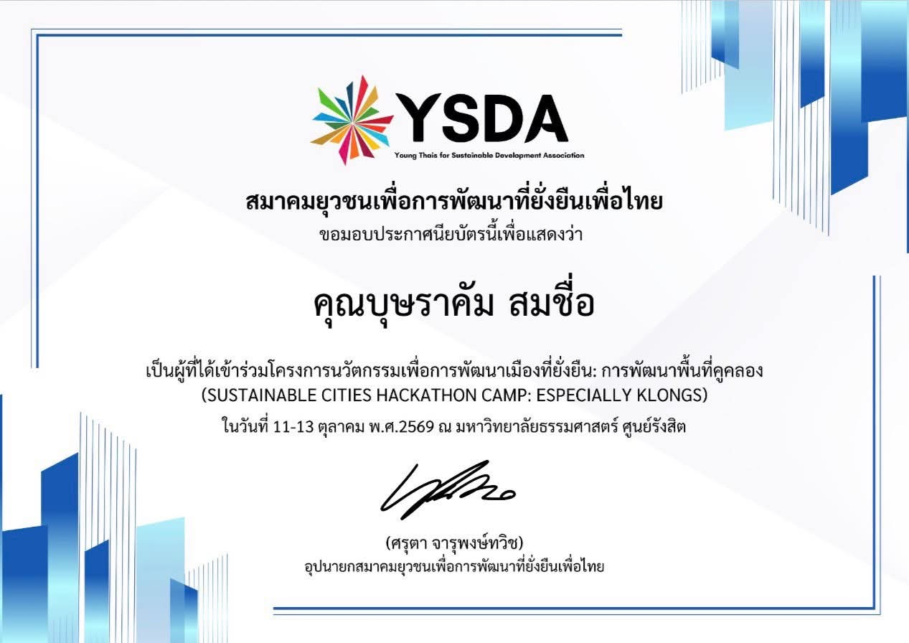

กลับไปสู่หน้าเดิม
Sustainable Cities Hackathon Camp
All For One University


การเข้าร่วมแข่งขันในรูปแบบทีมครั้งนี้ เปิดโอกาสให้ดิฉันได้ประยุกต์ใช้ทักษะทางเทคโนโลยีในบทบาทผู้พัฒนาเว็บแอปพลิเคชันผ่านแพลตฟอร์ม Lovable และผู้นำเสนอผลงานหลักต่อคณะกรรมการ นอกเหนือจากการสร้างสรรค์ชิ้นงานให้เกิดขึ้นจริงภายใต้กรอบเวลาที่จำกัดแล้ว ดิฉันยังได้เรียนรู้กระบวนการวางแผนงานอย่างเป็นขั้นตอน การจัดสรรหน้าที่ให้สอดคล้องกับศักยภาพของสมาชิก และการสื่อสารแนวคิดเชิงระบบให้เข้าใจง่าย ซึ่งเป็นรากฐานสำคัญของการทำงานร่วมกันในสายงานวิศวกรรม

ประสบการณ์จากการแข่งขันนวัตกรรมเพื่อชุมชน ฝึกฝนให้ดิฉันมองการสร้างสรรค์นวัตกรรมโดยเริ่มต้นจากปัญหาและความต้องการของผู้ใช้งานจริง ผ่านการลงพื้นที่เก็บข้อมูลและวิเคราะห์สภาพปัญหาในมิติต่าง ๆ ดิฉันได้เรียนรู้การจัดลำดับความสำคัญเพื่อระบุปัญหาได้อย่างแม่นยำ และนำแนวทางเดิมมาพัฒนาต่อยอดให้เหมาะสมกับข้อจำกัดของพื้นที่ ซึ่งกระบวนการคิดเชิงระบบตั้งแต่การวิเคราะห์โจทย์ไปจนถึงการออกแบบโซลูชันนี้ เป็นรากฐานสำคัญในการพัฒนาระบบและเทคโนโลยีให้ตอบโจทย์การใช้งานจริง